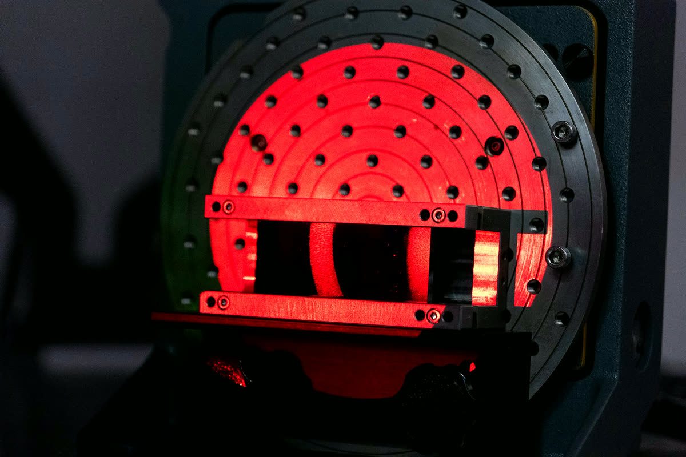
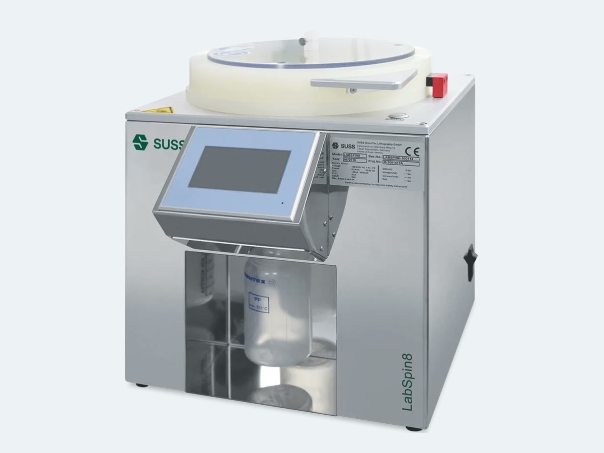
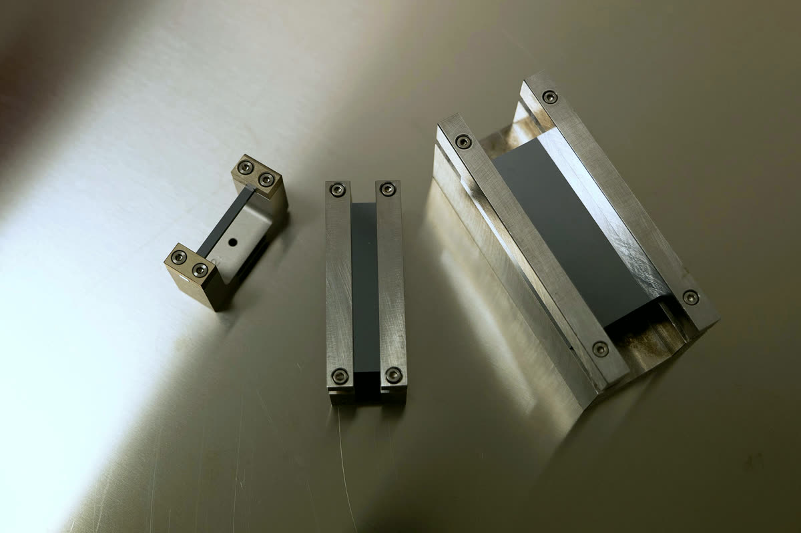

From raw wafer to beam.
The whole chain happens in-house: from a raw wafer to a characterised crystal ready for beam, inside a 130 m² cleanroom and the labs around it.

Cutting, polishing, etching
We cut wafers up to 150 and 200 mm with two blade dicers, then grind, lap and polish flats, optics and crystals. Laser ablation carves shapes a blade cannot, and wet chemical etching removes the damaged layer, leaving silicon and germanium free of surface defects.
- Dicing
- Disco DAD3220, Disco DAD3351
- Laser ablation
- Keyence MD-U1000C (UV), MD-X2020A (IR)
- Finishing
- Grinding, lapping, polishing, wet etching

Thin films and patterning
Resists and thin films are deposited by spin coating and patterned by robotic maskless photolithography: a collaborative robot carries a UV projector over the wafer. Sputtered films under tensile or compressive stress then bend the crystal to the curvature we need.
- Deposition
- Spin coating, sputtering
- Patterning
- Maskless UV photolithography on a cobot

Glue-free assemblies
Anodic, thermo-compression and silicate bonding join crystals to pre-shaped substrates without glue, so the assembly holds its curvature and does not twist.

Metrology
Every crystal is measured before it leaves the lab. High-resolution X-ray diffraction maps curvature and lattice quality; a Fizeau interferometer and an optical profiler measure shape and roughness; autocollimators check angles.
- X-ray diffraction
- Malvern Panalytical X'Pert³ MRD XL
- Interferometry
- Zygo Verifire HDX
- Profilometry
- Zygo NexView NX2

Mechanics
Crystal holders and benders are designed with FEM simulation and built in Ferrara; additive manufacturing makes fixtures and detector mechanics.
- Design
- FEM simulation
- Fabrication
- Precision machining, 3D printing